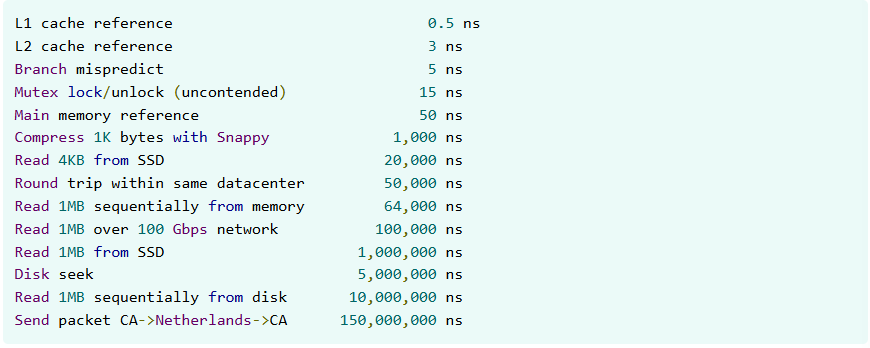

Jeff Dean、Sanjay Ghemawat 在這篇文章分享過去分析了各種程式碼的效能調優中大量的研究。 總結在進行工作時使用的一些通用原則和技巧，並嘗試選取一些範例原始程式碼變更（Change Log，CL）來展示各種方法和技巧。 其中以下大多數具體建議都參考了 C++。
下面我們盡量只談論 High-level 的概念與技巧，關於程式碼的部分就不深入探討，有興趣可以多參考 原文章內容～
TL;DR
效能優化應從一開始就考慮，而非事後補救。關鍵在於精確測量、選擇高效演算法與資料結構、 優化記憶體使用、減少不必要的工作（如分配、複製、日誌記錄），並善用平行處理。 對於 Protobuf 或其他資料序列化格式，應避免不必要的使用和複雜層次，並優化欄位類型與儲存方式。 在各種程式語言中，優先使用其高效能的內建或社群推薦的資料結構。
過早的優化本身不是問題，在沒有測量數據的情況下盲目優化才是，別浪費時間在不重要的地方。
正確做法：先把程式寫對 → 用 Profiler 找出真正的瓶頸 → 只在值得的地方動手 → 改完再測一次。
忽視效能和過度優化都是極端。真正的工程判斷是知道何時、在哪裡、做多少。
- 早期效能考量 - 在專案初期就考慮效能，而非後期彌補。在不犧牲可讀性的前提下，優先選擇更快的實作方式。
- 估算與測量 - 培養效能直覺，利用粗略估算評估操作成本，務必使用 Profiler 進行測量。
- API 設計考量 - 將效能改進封裝在 API 內部，提供批量操作，優先使用視圖類型減少複製。
- 演算法與資料結構 - 最重要的優化機會：將低效演算法替換為高效演算法。
- 記憶體優化 - 緊湊資料結構、記憶體佈局規劃、減少分配、使用記憶體池。
- 減少不必要工作 - 快速路徑、預先計算、延遲執行、使用快取。
- 平行化與同步 - 利用多核心、分攤鎖定成本、透過分片減少競爭。
The importance of thinking about performance
Donald Knuth 是著名的 CS Scientist，以其在演算法分析和程式設計領域的貢獻而聞名， 他編寫了《電腦程式設計藝術》(The Art of Computer Programming)。同時是 1974 年圖靈獎得主。
"我們應該忘記那些小的效率，大約 97% 的時間：過早的優化是萬惡之源。"
"We should forget about small efficiencies, say about 97% of the time: premature optimization is the root of all evil. Yet we should not pass up our opportunities in that critical 3%."

Knuth 提到的這句話被斷章取義地引用，說過早優化是萬惡之源，但他的觀點其實是指許多人經常在程式中 非關鍵的部分浪費大量時間進行優化，這不僅效果不彰，反而可能會對整體程式碼的可讀性和維護性造成 負面的影響。Knuth 建議，我們應該將精力集中在程式中真正影響效能的「關鍵的 3%」部分進行優化， 而不是過早地在不重要的地方尋求非必要且微小的效率提升。
Jeff Dean、Sanjay Ghemawat 在這裡正是探討這關鍵的 3%，他們認為很多人所說的這種 「讓我們盡可能用簡單的方式寫程式碼，效能問題以後再分析」，通常是錯的：
-
不要忽視效能問題：如果一開始就完全忽略效能，最終會導致程式碼各處都變得緩慢，
後續將難以找到明確的優化起點。整個系統可能會因為許多看似微小的低效而變得太臃腫，難以找到問題和修復。
- 如果你正在開發一個供其他人使用的函式庫，那麼遇到效能問題的人很可能是那些無法輕易進行效能改進的人。
- 當系統處於高強度使用狀態時，對其進行重大變更會更加困難。
-
在不顯著影響可讀性或複雜度的前提下，優先選擇更快的實現方式：不是說總是用複雜或難懂的
程式碼來取得每一分效能的改進，而是應該優先考慮較好的方案。這樣對效能的權衡意識，應該在日常中就培養比較好。
- 很難判斷是否存在可以輕鬆解決的效能問題，因此他們很多時候最終可能會採取一些代價高的解決方案。
Estimation 效能估算
如果培養對程式碼在效能方面的直覺，就可以在適當時機做出更好的決策：
- 培養效能直覺：開發者應該對不同程式碼結構、演算法或系統操作對執行時間和資源使用的影響有一個基本的認識。 例如，一個迴圈迭代 N 次，每次迭代執行一個常數時間操作，其整體時間複雜度就是 O(N)。如果迴圈內進行了搜尋操作，則可能變成 O(N log N) 甚至 O(N²)。
- 利用「粗略估算」(Rough Estimates)：這是指了解不同硬體或軟體操作的相對速度和成本。 例如，訪問 CPU 快取比訪問主記憶體快得多，訪問主記憶體又比訪問磁碟快得多，而網路往返延遲可能比所有這些都慢好幾個數量級。 了解這些基本的操作成本對於判斷潛在的效能瓶頸至關重要。
作者們提供了一些編寫程式碼時評估效能的技巧：
- 這是測試程式碼（test code）嗎？如果是，你主要需要關注演算法和資料結構的漸近複雜度 （asymptotic complexity）。其只在開發或 CI 環境中執行，不會影響正式產品的使用者體驗， 所以不需要像正式程式碼一樣做微觀的效能最佳化（micro-optimization）。
- 這段程式碼是特定於某個應用程式的嗎？如果是，請嘗試確定這段程式碼的效能影響有多大。 只需弄清楚這段程式碼是初始化、設定程式碼，還是最終會進入熱點路徑（例如，處理服務中的每個請求）的程式碼就足夠了。
- 這是會被許多應用程式使用的函式庫程式碼嗎？如果是，就很難判斷它對資源的敏感度。 因此遵循本文檔中介紹的一些簡單技巧就非常重要。
在選擇性能特徵可能不同的方案時，可以藉助粗略估算 (Rough Estimates) 進行更深入的分析，可以快速粗略地估計不同方案的效能，並可用於排除某些方案而無需實際實施。
運作方式步驟：
- 估算操作：估算需要進行的各種底層操作的數量，例如磁碟尋道次數、網路往返次數、傳輸位元組數等。
- 加乘成本：將每種昂貴操作與其粗略成本相乘。
- 加總成本：將結果加在一起。
以上內容列出了系統在資源使用上的成本。如果關注的是延遲，且系統存在並發性， 則部分成本可能會重疊，您可能需要進行更複雜的分析來估算延遲。

上表列出了一些基本底層操作的粗略成本。追蹤與系統相關的更高階操作的預估成本也很有用。 例如，您可能想知道從 SQL 資料庫讀取一個點的粗略成本、與雲端服務互動的延遲，或渲染簡單的 HTML 頁面所需的時間。
Measurement 測量
在效能優化中，測量是非常重要的一步，算是所有優化工作的基礎。
-
為什麼要測量？
- 找出真正的瓶頸 (Hotspots)：許多人會憑直覺判斷哪裡可能是效能問題，但這種直覺往往不準確。測量工具可以客觀地指出程式碼中實際花費最多時間的部分。
- 量化改進效果：優化後需要數據來證明是否有真正的效能提升，以及提升了多少。
- 避免過早優化：透過測量，可以避免在非關鍵路徑上浪費時間進行優化。
- 測量工具和技術
-
當 CPU 分析結果扁平時的處理
- 累積多個小幅優化
- 重構迴圈或其調用的程式碼
- 尋找更高層次的結構性改進
- 用專用實現替換過於通用的程式碼
- 減少記憶體分配
- 收集硬體效能計數器資料
除了以上，還有一些常見陷阱：
- 只跑一次就下結論：受 OS 排程、快取狀態影響，需多次取平均
- 忘記 Warm-up：JIT 語言（Java、JavaScript）第一次執行比後續慢很多
- 測量環境和生產環境不同：在自己電腦測的結果，在伺服器上可能完全不同
- 改了東西但沒重測：優化後一定要重跑，確認真的有改善，且沒有 regression
API 設計考量 (API considerations)
API 設計考量 (API considerations) 對於效能至關重要。因為效能改進有時需要更改資料結構或函數簽名 （Function Signature，即函數名稱、參數列表、回傳類型等），有可能會影響到 callers。 作者建議將程式碼組織成「深層」模組（在 interface 後隱藏大量功能），這樣就可以在封裝內進行效能調整， 而不會影響到公共 API。
以下列出了一些具體方法：
-
批量 API（Bulk APIs）：提供批量操作以減少昂貴的
API 邊界跨越或利用演算法改進。
- 減少邊界跨越成本：許多 API 呼叫涉及昂貴的「邊界跨越」，例如獲取互斥鎖 (Mutex lock)、RPC 呼叫或跨越語言邊界。批量 API 可以將 N 次的跨越成本分攤到一次呼叫中。
- 啟用演算法優化：批量操作允許實作方看到全貌，從而使用更優的演算法。
- 內部緩衝 (Internal Buffering)：如果無法更改公開 API，可在內部使用批量 API 並快取結果。
-
視圖類型（View types）：在 API
參數中，應極力避免強制要求特定的容器類型
（擁有資料所有權的類型），轉而使用視圖類型。
- 減少複製：這些類型不擁有數據，只包含指針和長度，傳遞成本極低。
- 容器無關性：呼叫者可以使用他們認為最適合效能的容器。
-
預分配/預計算參數（Pre-allocated/pre-computed
arguments）：對於頻繁呼叫的熱點函數， API
應該設計成允許呼叫者傳入已有的資源或資訊。
- 避免重複計算：如果呼叫者已經有了某個資訊，底層函數就不應該被迫重新計算它。
- 避免臨時分配：允許呼叫者傳入預先分配好的緩衝區，可以避免在熱點路徑上反覆進行記憶體分配與釋放。
-
執行緒相容類型與執行緒安全類型（Thread-compatible vs.
Thread-safe types）：
根據「使用模式」來決定同步機制應該放在 API 內部還是外部。
- 優先選擇「執行緒相容」：類型本身不進行內部同步，需要呼叫者在外部進行同步。因為並非所有使用者都在多執行緒環境下使用該類型。
- 適時選擇「執行緒安全」：如果一個類型典型的用法就是跨執行緒共享，那麼將同步移入內部是更好的選擇。
更多細節參考原文章內容： abseil.io/fast/hints.html#api-considerations
Algorithmic improvements 演算法改進
演算法改進 (Algorithmic improvements) 是效能提升中最關鍵的機會。通常會涉及到將演算法的時間複雜度 從 O(N²) 降低到 O(N log N) 或 O(N)，或者避免潛在的指數級行為。
更多細節參考原文章內容： abseil.io/fast/hints.html#algorithmic-improvements
Better memory representation 更好的記憶體表示
透過減少記憶體佔用 (Memory Footprint) 和快取佔用 (Cache Footprint)， 來減少昂貴的快取未命中 (Cache Misses) 並降低記憶體匯流排 (Memory Bus) 的流量。
以下是建議的具體技術與策略：
-
緊湊的資料結構 (Compact Data Structures)：使用緊湊的表示法可以顯著減少記憶體使用量。
-
較小的數值類型：如果資料可以用更小的類型存儲，就不要用大類型（例如使用
uint8_t來存儲 enum 值）。 - 位元編碼：在封裝良好的模組內部，可以考慮使用位元級別的編碼將數據壓縮到更少的位元組中。
-
較小的數值類型：如果資料可以用更小的類型存儲，就不要用大類型（例如使用
-
優化記憶體佈局 (Memory Layout)：對於佔用大量記憶體的類型，欄位的排列順序相當重要。
- 減少填充 (Padding)：透過重新排列欄位（例如將所有 pointer 放在一起，然後是 int32，最後是 bool），可以消除大部分的填充空間。
-
優化枚舉 (Enums)：明確指定底層類型（例如：
enum class OpType : uint8_t）。 - 提升空間局部性：將「經常一起被存取」的欄位放在結構體中相鄰的位置。
- 分離冷熱數據：將熱門的可變欄位與唯讀欄位分開，將冷數據移到結構體末尾。
- 用索引取代指標 (Indices instead of pointers)：在 64 位元機器上，指標佔用 8 個位元組。 一般認為指標比較快，但實際上局部案例上，索引會是更好的選擇。 索引不僅佔用空間小，而且通常代表資料存儲在連續的陣列中，有更好的快取局部性。
-
大量儲存 (Batched storage)：避免使用為每個儲存元素分配單獨物件的記憶體結構。
應考慮使用分塊的扁平表示法將多個元素緊密地儲存在記憶體中（如 C++
中的
absl::flat_hash_{map,set}）。 這類類型通常具有更好的快取效能，並且分配器開銷也更小。 -
內嵌式收納 (Inlined storage)：某些容器類型針對儲存少量元素進行了最佳化。
如果容器通常只包含少量元素，考慮使用內聯儲存類型，例如
InlinedVector。這些類型在頂層提供少量元素的空間，在元素數量較少時完全避免記憶體分配。 - 不必要的嵌套地圖 (Unnecessarily nested maps)：有時嵌套映射資料結構可以用帶有複合鍵的單層映射來替代。 這可以顯著降低查找和插入操作的成本。
- 競技場 (Arenas)：可以幫助降低記憶體分配成本，同時也將獨立分配的資料項目集中在一起， 通常佔用較少的快取行，並消除大部分銷毀成本。 這邊指的是 Heap 的 Arena Allocation (區域記憶體分配)。 對於包含大量子物件的複雜資料結構，Arenas 可能最為有效。
- 使用陣列而不是映射：如果映射的定義域可以用一個較小的整數或枚舉表示， 有時可以將映射替換為某種形式的陣列或向量。
-
使用位向量代替集合：如果一個集合的定義域可以用一個較小的整數表示，
那這個集合就可以用位元向量取代（
InlinedBitVector通常是一個不錯的選擇）。 使用位元布林運算（OR 表示並集，AND 表示交集）也可以非常有效率地進行集合運算。
更多細節參考原文章內容： abseil.io/fast/hints.html#better-memory-representation
Reduce allocations 減少記憶體分配
記憶體分配會增加成本：
- 分配器開銷：花費在記憶體分配器（Allocator）內部的時間。
- 初始化與銷毀：新分配的物件通常需要初始化，用完後需要銷毀（Destruction），這可能很昂貴。
- 快取效率降低 (Cache Misses)：每次分配通常會獲得一個新的記憶體地址， 這會導致數據分散在不同的快取行 (Cache Line) 上，降低快取局部性 (Locality)。
具體減少分配的方法：
-
避免不必要的分配 (Avoid Unnecessary Allocations)：在編寫程式碼時， 檢查是否真的需要每次都進行堆積分配 (Heap
Allocation)。
- 使用靜態或全域變數：如果需要一個「空物件」或「零值物件」，不要每次都 new 一個新的。
- 優先選擇堆疊分配 (Stack Allocation)：如果物件的生命週期在作用域 (Scope) 內，優先分配在堆疊上而不是堆積上。
- 預留容器空間 (Resize or Reserve)：當你知道向量 (Vector) 或容器的預期大小時， 務必預先分配空間。
-
重用臨時物件 (Reuse Temporary Objects)：不要在迴圈內部宣告複雜的物件 （例如
std::string、std::vector、Protobuf 訊息）， 因為這會導致每次迭代都進行建構和解構。- 將變數移出迴圈：在迴圈外宣告變數，在迴圈內使用，並在每次迭代開始時 Clear() 它。
- 注意：容器通常會保留其最大容量。如果某次迭代導致容器變得極大，可能需要定期重新建構。
-
避免複製 (Avoid Copying)：複製通常伴隨著分配。
-
轉移擁有權：例如使用
std::move，轉移擁有權而不是複製內容。 - 使用指標或索引：在臨時資料結構中儲存指標或索引，而不是儲存物件的副本。
-
選擇正確的演算法：例如
std::stable_sort通常需要額外的記憶體分配，如果不需要穩定排序，請改用std::sort。
-
轉移擁有權：例如使用
更多細節參考原文章內容： abseil.io/fast/hints.html#reduce-allocations
Avoid unnecessary work 避免不必要的工作
提升效能最有效的手段之一是避免不必要的工作，不僅僅是加快執行速度， 而是更聰明地跳過多餘的運算。
- 為常見情況建立「快速路徑」 (Fast paths for common cases)： 程式碼通常為了處理所有可能的情況而寫得較為通用，但某些簡單情況發生的頻率遠高於其他情況。 針對這些高頻、簡單的情況編寫專屬的執行路徑，避免進入昂貴的通用邏輯。
- 預先計算昂貴的資訊 (Precompute expensive information)： 如果某個資訊在多次執行中保持不變，應避免重複計算。 在初始化階段或迴圈外部計算好，然後重複使用。
- 將高成本運算移出迴圈 (Move expensive computations outside loops)： 最經典的優化手段，確保迴圈內部只做必須做的事。
- 延遲執行 (Defer expensive computation)： 不要急著計算，直到確定真的需要該結果為止。 如果某個昂貴的計算結果只有在特定條件下才需要，將其延後到檢查條件之後執行。
- 程式碼特化 (Specialize code)：通用函式庫為了彈性通常會犧牲效能。 針對特定熱點 (Hotspot)，手寫專用程式碼往往更快。
- 使用快取避免重複工作 (Use caching)
-
協助編譯器 (Make the compiler's job easier)：編譯器有時因為保守假設而無法進行最佳化。
在效能關鍵路徑上，程式設計師可以重寫程式碼來幫助編譯器生成更好的組合語言。
- 手動展開迴圈：對於非常熱門的迴圈，手動展開可以減少分支預測壓力和迴圈開銷。
- 減少函數呼叫：在熱點函數中避免呼叫其他函數，省去 Stack Frame 的建立成本。
-
降低統計收集與日誌成本 (Reduce stats and logging
costs)：
過度的監控和日誌記錄會嚴重拖慢系統。
- 採樣 (Sampling)：不要記錄每一個請求的統計數據，改為記錄 1/10 或 1/32 的樣本。
- 移除熱點日誌：在記憶體分配器或內層迴圈等極度頻繁呼叫的地方，應完全移除日誌語句，因為即使是檢查日誌級別也會帶來開銷。
- 刪除無用統計：停止維護那些「看起來不錯但實際上沒人看」的昂貴統計數據。
更多細節參考原文章內容： abseil.io/fast/hints.html#avoid-unnecessary-work
Code size considerations 程式碼大小考量
程式碼大小的考量不僅與儲存空間有關，更直接影響效能。 龐大的程式碼會導致編譯與連結時間變長、二進制檔案膨脹、記憶體使用量增加， 最重要的是會增加指令快取 (icache) 的壓力，並對分支預測器等微架構結構產生負面影響。
對於被廣泛使用的底層函式庫或模板化程式碼，控制程式碼大小尤為重要。以下是建議的具體技術：
- 削減過度內聯的程式碼 (Trim commonly inlined code)：被大量呼叫的函數若被過度內聯 (Inlining)，會導致程式碼大小劇增。
- 謹慎內聯 (Inline with care)：內聯雖然能提升效能，但若導致指令快取壓力過大，反而會有更大的成本損失。
- 減少模板實例化 (Reduce template instantiations)：模板程式碼會為每一種參數組合生成一份副本，容易導致程式碼膨脹。
-
減少容器操作生成的程式碼 (Reduce container
operations)：容器操作（例如：
map::insert）通常會生成大量程式碼。 - 針對特定庫的優化
更多細節參考原文章內容： abseil.io/fast/hints.html#code-size-considerations
Parallelization and synchronization 平行化與同步
平行化與同步的目標是利用現代 CPU 的多核心特性來加速昂貴的工作，同時最小化執行緒之間的協調開銷。
以下是建議的具體技術與策略：
-
利用平行處理 (Exploit parallelism)：現代機器通常擁有許多閒置的核心。將工作平行化可以顯著縮短執行時間。
- 批次處理：為了避免「每個項目」都產生平行化開銷，通常會先將項目分成批次 (Batches)，然後平行處理這些批次。
- 警告：必須仔細測量。如果系統已經沒有閒置 CPU，或者記憶體頻寬已經飽和，平行化可能不會有幫助，甚至可能因爭用而降低效能。
- 分攤鎖的獲取成本 (Amortize lock acquisition)：避免在熱點路徑 (Hot paths) 上進行細粒度 (Fine-grained) 的鎖定，以減少 Mutex 操作的開銷。將多次鎖定合併為一次。
-
保持臨界區簡短 (Keep critical sections short)：在持有鎖的時候，只做絕對必要的事。
- 避免昂貴操作：絕對不要在臨界區內進行 RPC 呼叫或檔案存取。
- 減少快取存取：盡量減少在臨界區內觸碰的 Cache Lines 數量。
- 透過分片減少爭用 (Reduce contention by sharding)：如果一個被 Mutex 保護的資料結構出現高度爭用，可以將其拆分為多個分片 (Shards)，每個分片有自己的 Mutex。
-
減少偽共享 (Reduce false sharing)：當不同執行緒頻繁修改位於「同一個快取行 (Cache
Line)」的不同變數時，會導致效能下降（因為快取一致性協定會強迫快取失效）。
使用
alignas指令，將「頻繁修改的欄位」與「唯讀或不常修改的欄位」隔離在不同的快取行中。 - 減少上下文切換 (Reduce context switches)：對於非常小的工作項目，直接在當前執行緒中「內聯 (Inline)」處理，而不是將其放入設備執行緒池中。這避免了排程和上下文切換的開銷。
- 考慮無鎖方法 (Lock-free approaches)：雖然直接操作原子變數 (Atomics) 很危險，但使用經過封裝的高階無鎖資料結構可以帶來效能提升。
-
其他建議
- SIMD 指令：探索是否可以使用 SIMD 指令一次處理多個數據。
- 緩衝通道 (Buffered Channels)：使用緩衝通道進行流水線處理 (Pipelining)。無緩衝通道會導致寫入者阻塞直到讀取者準備好。
更多細節參考原文章內容： abseil.io/fast/hints.html#parallelization-and-synchronization
Protocol Buffer advice
Protocol Buffer (.proto，Protobuf) 是由 Google 開發的一種開源、跨語言、跨平台的結構化資料序列化機制，常用於高效的網路通訊（例如 gRPC）或資料存儲。它會將結構化資料轉為輕量級的二進位格式，比 JSON 和 XML 更小、更快、更省頻寬。
雖然是方便的資料表示與序列化格式，但也可能帶來顯著的效能成本（包括
CPU、記憶體和程式碼大小）。他們說將一個簡單的 Protobuf 操作轉換為
C++ std::vector of structs，速度曾提升了
20 倍。
更多細節參考原文章內容： abseil.io/fast/hints.html#protobuf-advice
Bulk operations 批量操作
批量操作是一種非常建議使用的效能優化技術，其核心思想是一次處理多個項目，而不是逐一處理。這樣可以顯著減少系統開銷並開啟了演算法優化的機會。
以下是建議的具體策略：
- 減少邊界跨越的開銷 (Reduce Boundary Crossing Overhead)：許多的 API 呼叫都涉及昂貴的「邊界跨越」，例如獲取互斥鎖 (Mutex Lock)、發送 RPC、或進行系統呼叫。如果針對每個項目都支付一次這種開銷，成本會非常高。
-
啟用演算法優化 (Enable Algorithmic Improvements)：當你一次擁有一批數據時，你可以使用比「重複執行單次操作」更高效的演算法。
- 堆積初始化：逐一插入元素建立堆積的時間複雜度是 O(N log N)，但批量初始化 (Floyd's algorithm) 僅為 O(N)。
-
容器批量插入：將一連串的
map->insert呼叫轉換為單個批量插入操作。
-
利用硬體特性 (SIMD 與 Chunking)：現代 CPU
非常擅長處理連續數據和向量操作。
-
SIMD 指令：
absl::flat_hash_map利用 SIMD 指令，一次比對多個鍵值的雜湊位元。 - 分塊處理 (Chunking)：手動展開迴圈以一次處理 4 個或 16 個位元組，而不是逐位元組處理。
-
SIMD 指令：
- 內部緩衝與快取 (Internal Buffering)：有時候你無法更改公共 API 來讓使用者傳入批量數據。在這種情況下，你仍然可以在內部使用批量操作。 當使用者請求一個項目時，內部一次性處理一整塊相關數據，將結果存入快取。
-
簡化 API 簽名：批量 API
有時能讓介面更簡單、更高效。 例如，單個 Lookup
通常需要回傳複雜的
StatusOr<Value>，但對於批量 LookupMany，呼叫者往往只需要知道「是否全部找到」，回傳值可以簡化為 bool。
更多細節參考原文章內容： abseil.io/fast/hints.html#bulk-operations
CLs that demonstrate multiple techniques 實際案例
有些效能改進並非單一技術的功勞，而是綜合運用了多種優化手段的結果。
以下是這些案例及其運用的技術摘要：
-
GPU 記憶體分配器加速（~40% 速度提升）：這個案例針對
GPUBFCAllocator進行了大幅優化，使其分配與釋放速度提升了 36-48%。- 索引取代指標：改用 4 位元組的整數 Handle 而非 8 位元組指標。
-
批量儲存與記憶體佈局：所有 Chunk
結構存儲在連續的
vector<Chunk>中。 -
演算法改進：將
std::set(紅黑樹) 改為以 log2(size) 為索引的陣列。 - 快速路徑與移除日誌。
-
XLA 編譯器效能提升（~31% 編譯時間減少）：透過一系列針對
ShapeUtil和LiteralBase的修改，顯著減少了大型模型的編譯時間。- 減少複製與開銷：僅儲存 Span 的指標而非 Span 物件本身。
-
API 設計：引入
ForEachIndexNoStatus變體，省去 StatusOr 解構開銷。 - 程式碼特化與避免虛擬呼叫。
-
Google Meet 低階日誌加速（~50% 改進）：針對每個封包都會執行的關鍵路徑
ScopedLogId進行優化。- 移除熱點日誌、內聯、簡化資料結構（將 InlinedVector 替換為固定大小陣列）。
-
MapReduce WordCount 加速（~2倍）：針對 Combiner
階段的資料結構進行重構。
-
使用
hash_map<Key, ValuePtr*>取代 hash_multimap，使用鏈結串列儲存重複計數。
-
使用
-
SelectServer 警報處理優化（771ns → 271ns）：大幅提升了網路伺服器中設定警報的效率。
-
將
std::set改為AdjustablePriorityQueue，並移除昂貴的統計物件。
-
將
-
Pathways 吞吐量提升（~20%）
- 避免重複工作、Protobuf 優化、批量 API。
更多細節參考原文章內容： abseil.io/fast/hints.html#cls-that-demonstrate-multiple-techniques
*C++-Specific advice
這邊談論了 C++ 的具體建議。
更多細節參考原文章內容： abseil.io/fast/hints.html#c-specific-advice
Conclusion 結論
How to Find the Critical 3%
找到關鍵 3% 的方法只有一個：用 Profiler 測量，讓數據說話。
實際流程：
-
跑 Profiler，找出哪些函式佔用最多 CPU 時間
- C++：perf、gprof、Valgrind/Callgrind
- Go：pprof
- Python：py-spy、cProfile
- 通用視覺化：Flamegraph
-
看呼叫次數，不是看程式碼行數
一個在迴圈內執行 100 萬次的小函式，比只執行一次的複雜函式更值得優化。 -
直覺很常出錯
開發者常常優化自己「感覺很慢」的地方，但 Profiler 顯示的熱點往往出乎意料。
Back to the Original Question: Is Premature Optimization Really That Bad?
Knuth 的意思不是「不要優化」，而是「在關鍵的地方優化」。
正確的做法應該是：
- 先寫出正確的程式
- 測量，找出真正的瓶頸
- 只在值得的地方動手
- 改完再測一次，確認有效
忽視效能和過度優化都是極端。真正的工程判斷，是在對的時機、對的地方，做剛好夠的優化。
Further reading 延伸閱讀
- Optimizing software in C++ by Agner Fog：介紹了許多在 C++ 中用於提昇軟體效能的實用底層技術。
- Understanding Software Dynamics by Richard L. Sites：涵蓋了診斷和修復效能問題的專家方法和進階工具。
- Performance tips of the week：一系列實用技巧。
- Performance Matters：一系列關於優化的文章。
- Daniel Lemire's blog：有趣演算法的高效能實作。
- Building Software Systems at Google and Lessons Learned：一段描述 Google 十多年來遇到的系統效能問題的影片。
- Programming Pearls and More Programming Pearls: Confessions of a Coder by Jon Bentley：本書收錄了從演算法入手，最後實現簡潔高效程式的文章。
- Hacker's Delight by Henry S. Warren：本書介紹了一些常見問題的位元級和算術演算法。
- Computer Architecture: A Quantitative Approach by John L. Hennessy and David A. Patterson：涵蓋了電腦體系結構的許多方面，包括注重效能的軟體開發人員應該了解的快取、分支預測器、TLB 等。